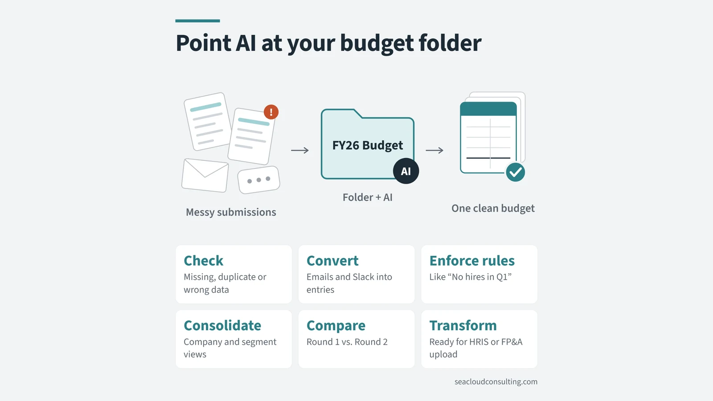
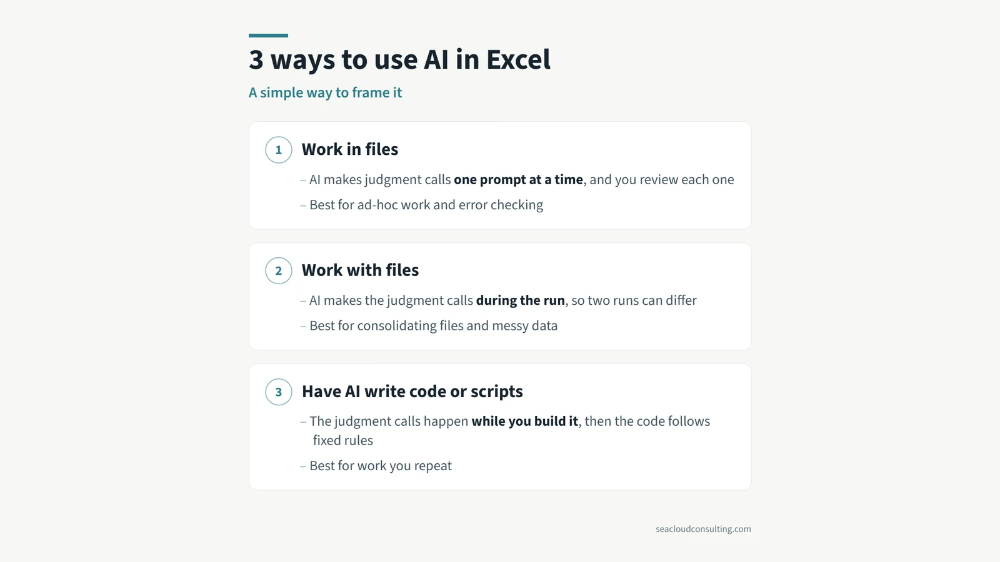
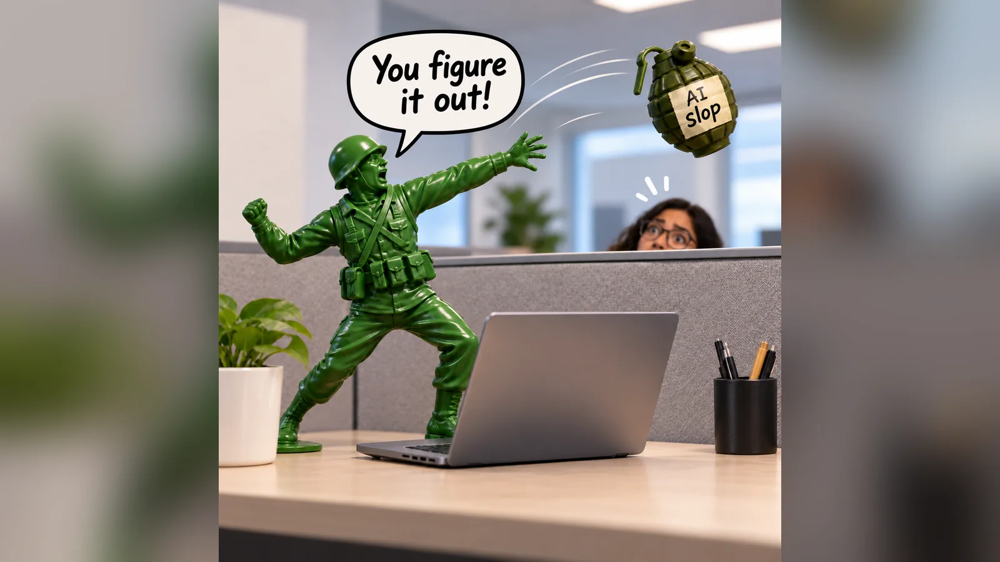

Launch of Sea Cloud Consulting: Strategic FP&A For Early-Stage Growth Companies

I’m excited to announce the launch of my FP&A consulting business, Sea Cloud Consulting. When I was working full time, I always wished that I had an experienced resource that I could call when times were busy, either for project-based work or as a second set of hands. That is what I’m now offering.
My focus is on helping early-stage growth companies, either by working as a part-time, embedded team member or by contributing to projects such as the following:
• Long Range Financial Models & Strategic Planning
• Annual Forecasts & Model Builds / Rebuilds
• Cost Reduction & Profit Improvement Initiatives
With 20 years of experience in financial strategy and operational efficiency at late-stage and public companies, I’m passionate about helping organizations improve financial performance and make smarter strategic and financial decisions.
Feel free to reach out to discuss any FP&A topic or challenge you’re facing. I’m always happy to share insights, brainstorm solutions, and explore ideas—whether or not it’s the right time to start a consulting project.
More from the blog

Point AI at your budget folderWant to use more AI in your budget process this year? Connect a folder and let AI work with files.
3 ways to use AI in ExcelBudgeting season is coming up for a lot of companies. Here is a simple framework for the three main ways you can use AI with Excel.
Don’t toss AI slop grenadesI heard this term on a podcast recently, and the meaning is clear if you have ever received half-baked AI output at work.